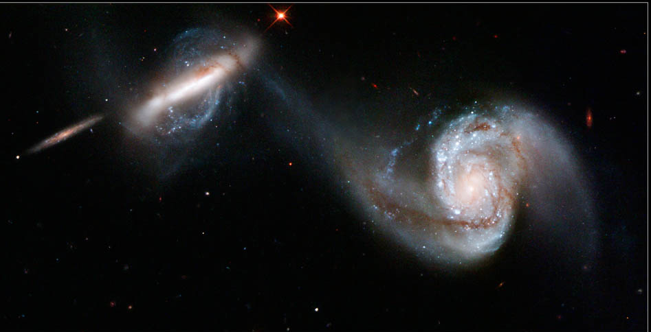

Enlarge
The Magic of Death
To confront the multiple Graham number of years for the return, the magic of death provides that:
There is no waiting.
The moment after you die you "wake up" as the baby you were.
But when the music box plays the tune again -
Is it still you?
Home Page
.
.
.